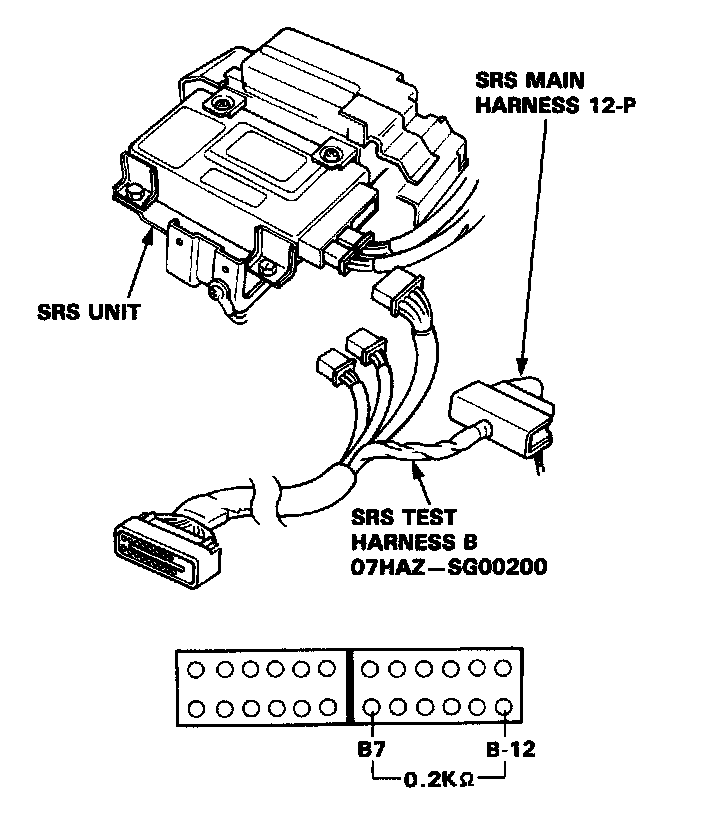
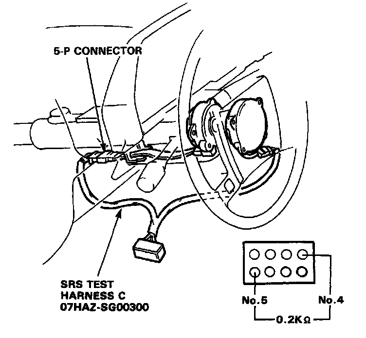
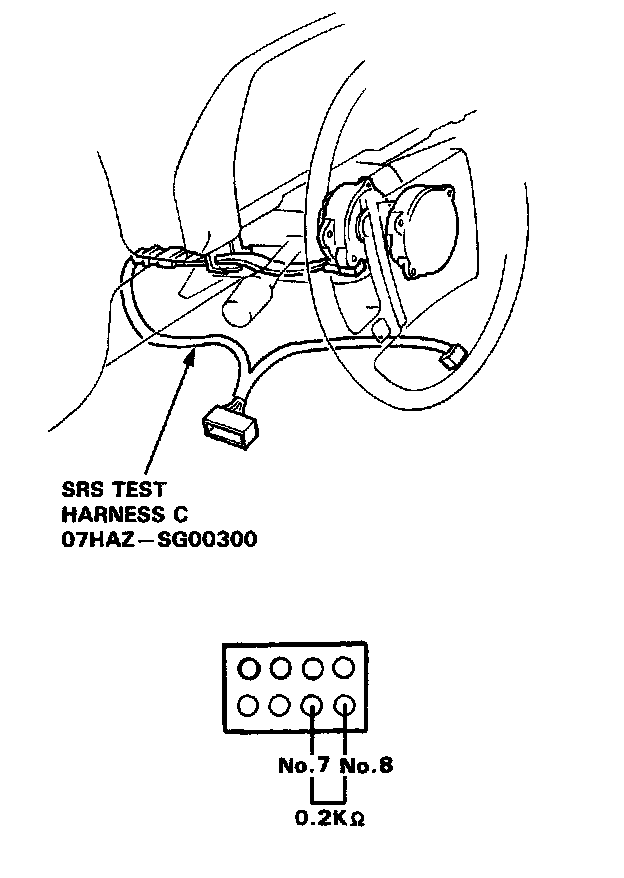

Failure Mode E
Mode E: Airbag inflator or cable reel open.
CAUTION : Disconnect both the negative and positive battery cables. Connect the short connector to the airbag assembly - refer to "Indicator Light Troubleshooting", caution notice.
1. Disconnect the main harness 12-P connector. Connect the SRS test harness B only to the main harness side 12-P connector. Measure the resistance between the B7 and B12 terminals.

SRS Test Harness B
- If resistance is more than 0.2K ohms, go to step 2.
- If resistance is less than 0.2K ohms, the SRS unit is faulty; substitute a known good SRS unit and recheck the voltages according to the chart in the "Indicator Stays On Continuously" procedure.
2. Disconnect the cable reel harness and main harness 5-P connector, and connect the SRS test harness C only to the cable reel harness side 5-P connector. Measure the resistance between terminals No.4 and No.5.

SRS Test Harness C - Connected
- If resistance is more than 0.2K ohms. go to step 3.
- If resistance is less than 0.2K ohms, the SRS main harness is faulty: replace the SRS main harness and recheck the voltages according to the chart in the "Indicator Stays On Continuously" procedure.
3. Disconnect the airbag assembly and cable reel harness 2-P connector, and connect SRS test harness C to the airbag assembly harness's 2-P connector. Measure the resistance between terminals No.7 and No.8.

SRS Test Harness C - Disconnected
- If resistance is less than 0.2K ohms, the cable reel is faulty: replace the cable reel and recheck the voltages according to the chart in the "Indicator Stays On Continuously" procedure.
- If resistance is more than 0.2K ohms, the inflator is faulty: replace the airbag assembly and recheck the voltages according to the chart in the "Indicator Stays On Continuously" procedure.